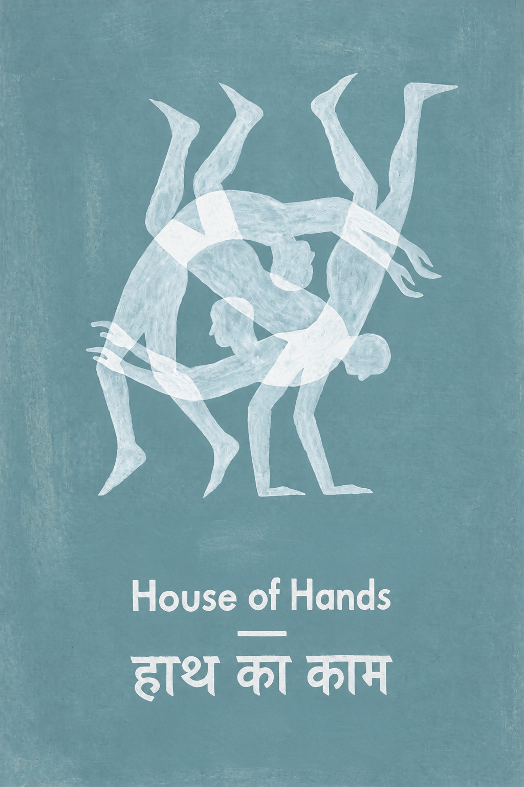
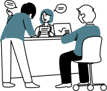
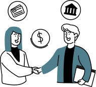
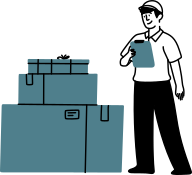
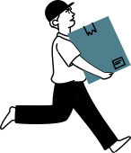
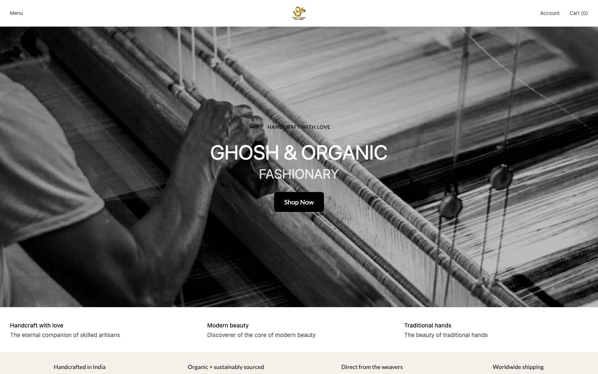
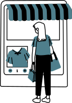
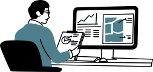

The people who make a cloth or a garment are usually lost somewhere between the workshop and the shop. Our work is to bring them out, so the person buying knows where it comes from and who made it.
We are a textile company from India and a member of the Handloom Export Promotion Council (HEPC). Melbourne is our first exhibition as members. It is not only weavers we work with, it is a network:
Handloom cloth by the metre, from cotton and linen to wool, silk and Pashmina.
Who turn a brief, a sketch or a mood into a garment that can be made.
Many work on their own or in a small unit, cutting, stitching and finishing.
Groups of artisans who make and sell together, like the ones in House of Hands.
Over time we have worked with each of them to build one streamlined way of sourcing, run on Luna, our production platform, where you can see who is doing what.

Constant and persistent about keeping kala cotton alive, an old rain-fed cotton of Kutch.
The dotted Tangaliya weave, where each dot is a small twist of yarn worked into the warp by hand.
Pashmina shawls and stoles, woven in Srinagar.
Handwoven wool fabric, made on the loom by hand.
Handloom linen, cotton and silk by the metre and as finished pieces. GOF also sells direct to customers made to order on their own Luna store, gof.asia.
You are not limited to what one workshop can make. One order can be split by stage, each with its own partner, so it never rests on a single workshop. If one is busy or falls short, another can take that stage and the rest carries on. Pick the partners yourself, or tell us what you need and we help you choose.
A real order from October 2026: an embroidered apron, made across three partners on Luna.
The partner who finishes a stage sends the goods on with a booked, tracked courier.
The next partner counts what arrived in their app. Only then is it received.
Each partner is paid for their own stage once it is recorded and approved.
Every hand-off is on record. If nobody on Luna makes what you need yet, we find weavers on the census map and bring them on board with their agreement.
If you are looking for the cheapest product, we are not the right place. We source and make artisan pieces, and each one carries its own story, so there is no minimum order. You can start with a single piece.
A sketch, a photo, a swatch or one line about what you want, and how many, even if it is one.
Fabric options with the name of who made each one. Choose the partners yourself or let us help you choose: one partner or several, a different one for each stage if you like.
Customisation is part of the work: embroidery, construction and finish are written into the design. You get an estimate from real fabric prices with the making in it, as a quote link your buying team can accept. Nothing starts until you do.
Every stage is a task in our partner app on the maker's phone, with photos as it goes. You follow the progress of your design and order live in your account.
Who wove it, who stitched it, which supplier the fabric came from, and the energy and water used to make it, where we measured it.



Ghosh & Organic Fashionary (GOF) is a handloom collective in Murshidabad, West Bengal. On Luna they run their own online store, gof.asia, and sell their cloth made to order, straight to the customer.

Muslin, Bengal Jamdani, kala cotton, handwoven linen and cotton, handspun and mulberry silk, by the metre and in 12 m packs.
The customer pays on gof.asia, the order reaches GOF, they make it, book the courier from Luna and get paid.
"The platform lets us sell directly to the customer with made-to-order, makes life easy."Founder, GOF

Designers and labels can do the same: design on Luna, have it made by our partners, and sell it from your own store on your own domain. 15 stores already run this way.
Every quote is worked out from what the cloth and the making actually cost on real orders. Here is one, start to finish: a robe in GOF mulberry silk, made by Ksaman.
| Piece | Fabric | Making | Cost per piece |
|---|---|---|---|
| Robe, kala cotton | 3.1 m · A$13.30 | A$15.05 | A$28.35 |
| Robe, handwoven linen | 3.1 m · A$37.79 | A$15.05 | A$52.84 |
| Robe, mulberry silk | 3.1 m · A$59.49 | A$15.05 | A$74.54 |
| Striped cotton top | 1.75 m · A$6.49 | A$12.79 | A$19.28 |
Robes: fabric from GOF, Murshidabad, made by Ksaman, Bhubaneswar. Top: made by Sharlho, Dharamshala, where the 9-piece run used 3.3 kWh of electricity per piece. Costs before JYT's 20%, tax and shipping. Converted at A$1 = ₹66.45 (ECB reference rate, 21 October 2026); your quote uses the rate on the day it is made.
Come and touch the cloth at the stand, or write to us. Tell us what you are looking for and we will tell you honestly who can make it.

On Android and iPhone, partners accept work, start and finish each stage, upload photos and video, book courier pickups and see what they are owed.